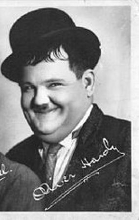

Stan si Bran sunt numele date pe româneste unui celebru cuplu comic din anii '20-'50
ai secolului al XX-lea (Stan si Bran fiind doua dintre cele mai vechi si populare nume
barbatesti la români, alaturi de dubleta Stan si Oprea). Cuplul era format din actorii
Stanley Laurel ("Stan") si Oliver Hardy ("Ollie", supranumit pe româneste „Bran”).
Desi în memoria românilor apar ca personaje recente ei au activat în perioada 1930 - 1950.
Interesant nu? Stanley Laurel a murit În 1965, iar Oliver Hardy în 1957... Dumnezeu sa-i ierte...
Au regizat multe comedii pentru noi romanii precum La dentist,Chiriasi si multe altele.
In unele comedii Stan plange iar Bran loveste.Caraghis nu?In comedii fac multe comicarii de
te fac sa razi cu lacrimi sunt in adevaratul sens al cuvantului haiosi.